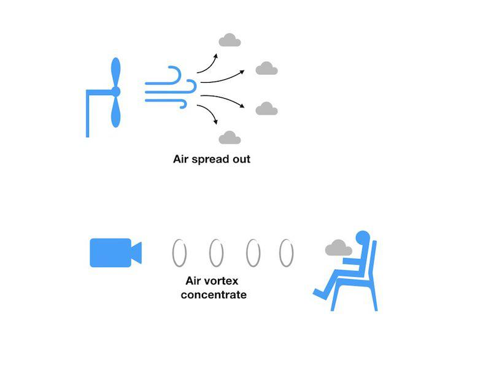
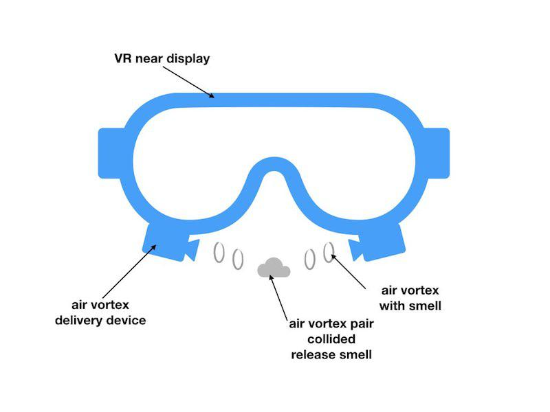

空气炮空调
空气炮是一种常见的玩具, 利用空气脉冲释放出一个空气涡旋(air vortex), 这种air vortex可以在长距离内保持形状, 其内部的空气很少与外界空气交换, 而且投递的精度很高. 当air vortex遇到阻挡或者与另一个air vortex相撞时, vortex的结构破坏, 里面的空气释放出来.
于是可以用来将热空气或冷空气以特定形式进行长距离、高空间精度的投递。除了用作空调, 也可以用来投递气味, 还可以用来投递干净的空气.
优点是只需要对少量的空气进行加工就可以满足个人的要求. 不需要过滤整个屋子的PM2.5, 只需要过滤用户吸入的那一部分就可以了.
缺点是噪音, 我估计是因为噪音的问题导致这个技术一直没有出现在市场上.
这个发明, 想的时间晚了, 已经有很多相似的现有技术在先. 所以没有卖掉.
解决的问题
家庭用能中, 很大部分是为了改变室内的温度. 如果房间较大, 为了达到使人舒适的温度需要对整个房间中的空气进行加热或致冷, 这需要相当大的能耗。
空气是热的不良导体, 因此为了改变空气温度，只有使用对流的方式使热量在空气内传播。现有的空调方式是将气体通过风扇吹送至室内,风扇吹出的风会迅速分散至周围，热量迅速与周围空气交换。因此难以实现远距离, 高空间精度的热空气或冷空气投递，例如制热制冷空调往往造成室内的温度分布差异大, 靠近空调的温度过冷或过热，而远离空调的区域则相反。
方案详述
Air vortex

An air vortex is a ring of air that typically has a toroidal shape and is capable of traveling at high speeds over large distances. Unlike laminar airflow which quickly disperses, a vortex is capable of keeping its shape and form.
典型的 air vortex，如smoke ring 和 air vortex cannon，其特点是：
- 空气团内部不与外界交换
在 air vortex中的空气，并不与外界的空气有明显的交换。例如 smoke ring 中的烟雾颗粒就可以保持集中，维持doughnut shaped的形态，不致于散开。
- 可以远距离传输
An air vortex cannon is a device that releases doughnut-shaped air vortices — similar to smoke rings but larger, stronger and invisible. A toy commercial version, with a barrel 12 inches (30 cm) wide and useful range of 20 feet (6.1 m) is sold under the name Air bazooka or Airzooka
- 可以高空间精度
在 Disney 的 aireal触觉发生器中（https://www.disneyresearch.com/project/aireal/)，在1.25 m 距离外,以空气团命中直径85cm 的标靶。
综上. air vortex 可以将空气团以特定的形态远距离传输到指定的位置，并且在传输过程中空气团内部的气体物质较少与外部空气交换。
空调的组件单体
空调组件包含以下几个组成部分，
- 空气团性质改变装置，用于改变发射出的空气团的物理化学性质，比如湿度温度，以及其内部的物质组成部分, 比如气味。
- 空气脉冲发生装置，用来产生空气脉冲。用来形成空气涡旋。
- 气体方向控制装置，用来将空气涡旋输送到特定的方向。
空气团性质改变装置。
空气团改变装置是将空气团的温度湿度或者内部物质进行改变。
- 湿度
空气团的湿度可以通过超声雾化装置将水雾化后送入空气团内。
- 内部气体物质
内部的物质可以增加气体香料、杀虫剂、皮肤感觉受体的激动剂或阻断剂（例如薄荷）。
-
气体香料. 气体香料可以在不同尺寸的设备上工作，为虚拟现实用户，家庭影院用户或电影观众提供气味体验。
-
在大型设备中，例如在影院中, 微型泵从容器中提取液体香料并将其送至雾化装置。 微泵可以是蠕动泵和挤压泵。
-
在微型设备中, 例如虚拟现实头戴显示中, 可以使用类似喷墨打印机的装置. 在微管中, 有微型加热设备, 通电后加热局部液体产生气泡, 推动液体香料释放.
-
-
温度
空气团的温度需要用加热和制冷装置进行改变。
- 半导体
空气加热和制冷装置可以使用半导体加热和制冷装置，也可以使用常规的空调。半导体加热制冷装置是半导体加热制冷片。利用现有技术，在给特定半导体施加电流后会改变半导体一侧的温度，通过控制电流的大小方向能够控制温度。广泛应用于饮水机、车载冰箱等设备。
这一装置可以形成非常模块化的小型组件，并且同时可以用于制冷或加热。但是这种方式效率可能略低。
这种方式也可以与常规空调相配合，例如在外部使用散热通道与常规的空调器的风道相结合。
- 常规空调
气体加热或者制冷也可以使用常规的空调。在空气团生成的区域使用单向气阀与常规空调的通道相连接。也可以使用电喷嘴结构将常规空调内已经加热和制冷的气体，送入到空气团产生装置中。
气体脉冲产生部分。
为了产生air vortex，需要有短促的气体脉冲。将空气从喷气口迅速吹出。脉冲产生部分可以由振膜结构喷嘴结构或者泵结构构成。
- 振膜结构
最基础的振膜结构是一个可以受控震动的薄膜，例如使用电磁阀控制的震动膜。也可以直接使用音箱，其本质也是电磁控制的振动薄膜，但更容易利用现有技术控制。例如两个或四个方向相对的音箱。
- 喷嘴结构
可以将外部的空气收入。例如使用类似于发动机的电喷嘴。或者使用在喷雾气场使用的机械喷嘴。
- 泵结构
可以将大量的空气送入。例如使用风扇、压缩机或者膜片泵。
气体方向控制装置
空气团可以被发射到不同的位置因此需要控制气体发射的方向。可以使用柔性的气嘴或对空调组件整体调整方向。
- 柔性气嘴
空气团经过柔性的管道后从气嘴送出形成空气旋。柔性管道的末端由舵机控制方向。气嘴末端的开口直径可选，优选在5-30cm。
- 整体移动
空调组件是较小的部件，因此也可以整体旋转，多个空调组件可以堆叠形成柱状或面状结构,柱状或面状结构也可以同步旋转。
- 风叶结构
虽然风叶常被用来导向气流或用来改变气流方向，例如常规空调中的摆动叶片，但是风叶结构可能会改变空气涡旋的形态从而影响空气涡旋的运行，因此本方案不推荐使用。
综上，空调组件单体能够将加热或制冷的空气团发射到指定方向并消除噪音。空气团的直径优选在5-30cm，当空气团接触到障碍物例如人体时，空气团形态破坏，释放出其中的热空气或冷空气。
空调组件阵列
多个空调组件单体按照一定位置排列可以形成空调组件的阵列。容易构造的阵列有柱状，曲面形态。
每一组空调组件阵列除了多个空调组件之外,还应有室内定位装置，主动移动装置和人体定位装置。
柱状阵列
可以将多个空调组件单体垂直排列，形成柱状结构,向圆柱的一个或多个方向释放空气涡旋。空调柱可以方便移动由用户摆放在身边，或者布置多个空调柱在室内的不同位置。
面阵列
多个空调组件单体可以排列成二维平面或曲面，面阵列可以方便悬挂于墙面，或固定于房顶，或与现有空调器相结合。
多个空调组件阵列的整合使用
- VR气味

在虚拟显示头戴显示器下方靠近鼻子的位置, 安装一对air vortex发射装置. 根据虚拟现实场景的设定, 所需要的气味被喷射到用户的鼻子附近, 为用户提供虚拟显示嗅觉体验.
- 电影院气味
在影院座椅靠背上安装一对air vortex发射装置. 根据电影场景的设定, 所需要的气味被喷射到用户的鼻子附近, 为用户提供观看电影时的嗅觉体验. 由于使用airvortex, 所以所需要的空气量很少, 使气味容易被清除, 容易更新.
- 致热或致冷空调
多个空调组件阵列可以摆放在室内的多个位置，例如在房顶墙面,沙发附近、办公桌附近。各个空调组件单体向用户位置发射已加热或制冷的空气团。空气团的温度、空气量以及发射频率可以根据用户所在位置的周围环境作出自动调整。
-
空气加湿与干燥 在空气团中加入或除去水份，可以改变用户周围的湿度。达到舒适的范围，不同的用户可以设定不同的湿度与温度。
-
局部空气的净化
空气团内可以先经过除尘过滤，紫外消毒后，再发射到用户附近，使用户能够呼吸到清洁的空气。对于办公环境、课堂等，还可以改变空气团内的氧分压，以改善困倦的气氛。特别的，本方案还可以作为手术环境的空气净化，迅速将清洁空气投放至手术无菌区域。达到局部空气层流和除菌除尘的效果。
导致失败的对比文献
-
Spotscents: a Novel Method of Natural Scent Delivery Using Multiple Scent Projectors (Research Paper) Publication Date: 2006; Author(s): Fumitaka Nakaizumi, Yasuyuki Yanagida, Haruo Noma, Kenichi Hosaka;
-
Stop to Smell the Virtual Roses: Why Scent Could Be the Next Frontier for Vr (Web Page) Publication Date: February 3, 2017; Author(s): Aaron Krumins;
-
Projection-based Olfactory Display (Web Page) Publication Date: July 19, 2006;
-
US9597588 Title: Advanced Gameplay System; Assignee: Open Invention Network LLC; Filed: May 7, 2015; Issued: March 21, 2017.
-
US20170266676 A1 Title: Head-mounted Displays and Attachments That Enable Interactive Sensory Experiences; Assignee: Eye Labs, LLC; Filed: March 24, 2017; Published: September 21, 2017.
-
US9804398 Title: Head-mounted Perfume Dispenser Apparatus; Assignee: Panasonic Intellectual Property Corporation of America; Filed: May 10, 2015; Issued: October 31, 2017.
Comments
Comments powered by Disqus